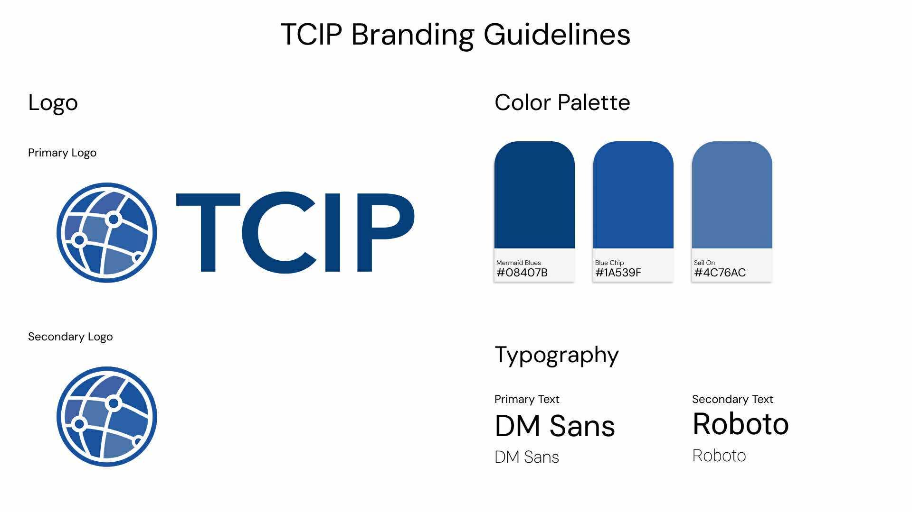

Showcasing product mockups and digital interfaces I've designed using Figma and data-driven case studies.
Created high-fidelity UI/UX wireframes for popular platforms, focusing on user flow, intuitive design, and visual aesthetics. These include redesigns inspired by DoorDash's ordering experience and Spotify's web player interface.
A sleek, modern redesign focusing on enhanced usability and visual harmony for desktop and mobile interfaces.
A streamlined and user-friendly food ordering experience designed for simplicity and speed, inspired by DoorDash.
Collaborated with the Technology Competitiveness and Industrial Policy Center to develop comprehensive logo ideations. The design process emphasized strategic color selection, meaningful iconography, and purposeful positioning to visually communicate the center's commitment to advancing technology policy and strengthening industrial competitiveness. Each design element was carefully crafted to reflect the organization's mission of shaping innovation and economic strategy.

Client project developing logo ideations with a focus on colors, iconography, and positioning that aligned with the center's mission and purpose in technology policy and industrial competitiveness.
Explored creative design through passion projects including a comprehensive restaurant brand identity and personalized collectibles. For the restaurant concept, I developed a complete visual system spanning logo design, food posters, merchandise, menus, and digital interfaces using Figma and Adobe Illustrator. Additionally, I created custom Pokémon-inspired trading cards for my friends as a heartfelt graduation gift, combining nostalgia with personal memories to celebrate our college journey together.
Complete brand development including logo, food posters, merchandise, menu design, website mockups, and snackpass integration. Created using Figma, Adobe Photoshop, Lightroom, and Illustrator to establish a cohesive visual identity.
A limited edition collection of 12 custom trading cards designed as graduation gifts for friends. Each card features personal photos and memories, blending nostalgic Pokémon aesthetics with heartfelt sentiment.
Collaborated on a UX case study focused on enhancing online apparel shopping using data-driven recommendations. Developed an extension concept that predicts jean fit accuracy and suggests reviews based on purchase history.
A prototype extension designed to assist users in finding their best jean fit by analyzing past purchases and alerting on sizing mismatches.